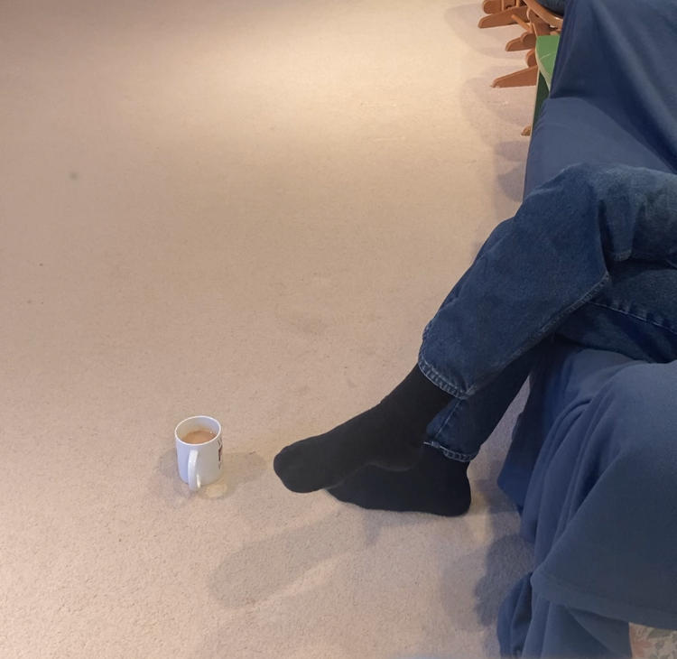
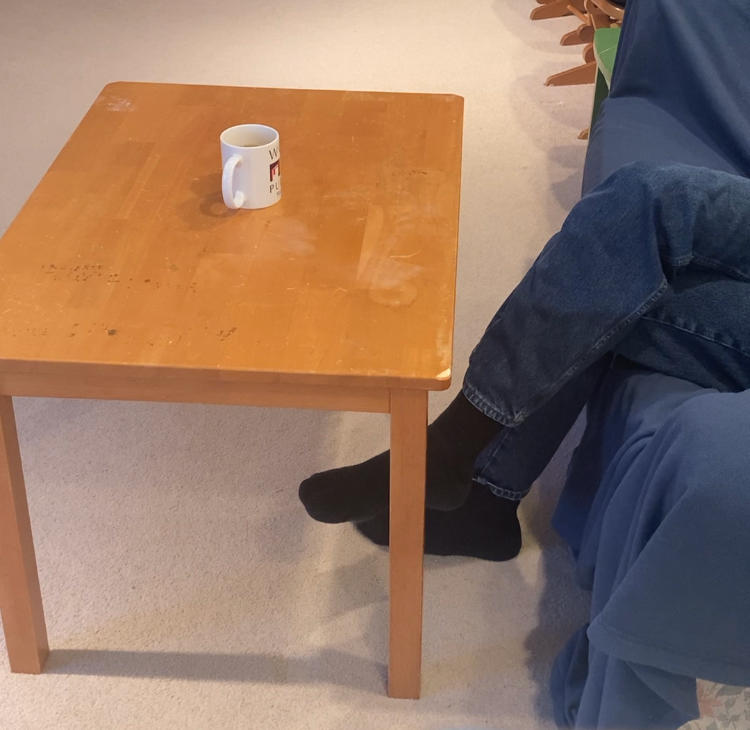

Copyright © under a triple license to the individual author and to lemonmama.com and to public domain.
Affilate statement: We may have interest, and or may be earning commissions.
Affilate statement: We may have interest, and or may be earning commissions.
推銷產品的連結 Check out lemonmama.com's Promoted Products Page
#0035 2024-10-24 by Morgan Jassen on lemonmama.com 2024-06-04 “Ye Olden Pirate Budget” is Born.txt i just dreamt this. I hereby Invent what I am calling “Ye Olden Pirate Budget”. It henceforth is born, and it is like this: One document that describes incomes and expenses for three years out. In a word, it could be called a budget. However in my dream it is more than that. In my dream it is the FEELING that is special when I make and use and feel this my special budget. I feel like calling it "Ye Olden Pirate Budget" or something. Because envisioned I write down ahead of time, 3 years out, where every penny will come from and where every penny will go to. And at the same time, 3 years out, I make this plan. And, the way in which I make this plan is such that there is more than enough money to cover a full thriving abundant experience-rich life. And so then this makes me feel good. I feel good to make a plan, including money sources and money destinations, that accounts for a fullfilling life. And so let me go write this document right away. And then let me live it. If needed I'll edit the document. And then I'll live it. Then I'll keep editing and living according to this my 'Ye Olden Pirate Budget'. And all the while I'll be living a life that is constantly full, thriving, abundant, experience-rich, and fulfilling. And I'll have more than enough money while I'm doing this throughout. Prediction 1: One thing I predict this will mean is it will need to be a realistic budget and also I'll need to have self-discipline to stick to the budget or else realistically adjust it. Then again stick to it or again realistically re-adjust it. Prediction 2: A second thing I predict this will mean will be that I'll need to make effort to maintain good relationships and good boundaries with friends and family in my life, especially where money is involved, especially in order to stick to this my 'Ye Olden Pirate Budget'. Because my budget affects my friends and their budgets affect me. I will need to either stick to my budget when in comes to my friends, or else realistically re-adjust my budget when it comes to my friends, ongoing. Fin. See similar: "Having a Single Software Customer Support Document that Represents the Software to Everyone" | https://lemonmama.com/investorworker/2014/2014-05-29-single-document-represents-software.html #0034 2024-10-16 1659 - Morgan Jassen - lemonmama.com “Bumpkin Pirate” Job Title Doesn't Meet Linkedin Job Post Guidelines#0033 2024-10-16 1643 - Morgan Jassen - lemonmama.com Mysterious Seat At The Table "the mysterious comings and goings of an offer of a seat at the table" Is a phrase I use to describe this. Here in this podcast episode they are also talking about this: https://journeytolaunch.com/episode302/ "... patriarchy ... seat at the table..." #0032 2024-10-14 2041 Morgan Jassen on lemonmama.com Oh, Dang. My Coffee Cup Is On The Floor. This is awkward:  So crude. Would be much better if it had a coaster underneath it. ...  Ahhh..... Much better! #00xx Title Here... Body text here... Text... Text... In conclusion, ... 2024-xx-xx by author Morgan Jassen on lemonmama.com
{kind=link}
{kind=link}